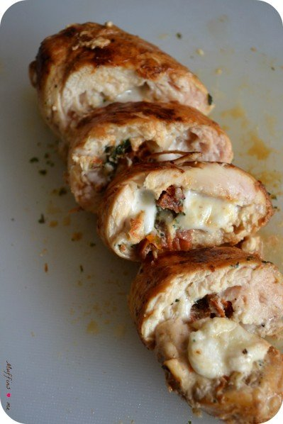

Roulés de poulet mozzarella tomates séchées
Ingrédients
4×
- 4 blancs de poulet
- 1 boule de mozzarella
- tomates séchées en dés
- basilic
- huile d'olive

Préparation
Étape 1
Aplatir 4 blancs de poulet et les assaisonner. Garnir chacun de tranches d’1 boule de mozzarella, de tomates séchées en dés et de basilic.
Étape 2
Rouler et maintenir avec deux cure-dents.
Étape 3
Dans une poêle allant au four, chauffer un généreux filet d’huile d'olive et saisir les roulés sur chaque face.
Étape 4
Enfourner 25 à 30min à 200ºC en arrosant régulièrement de jus de cuisson. Ôter les cure-dents avant de servir.
Résumé
4 blancs de poulet
1 boule de mozzarella
tomates séchées en dés
basilic
Aplatir
Rouler
huile d'olive
saisir
Enfourner 200ºC